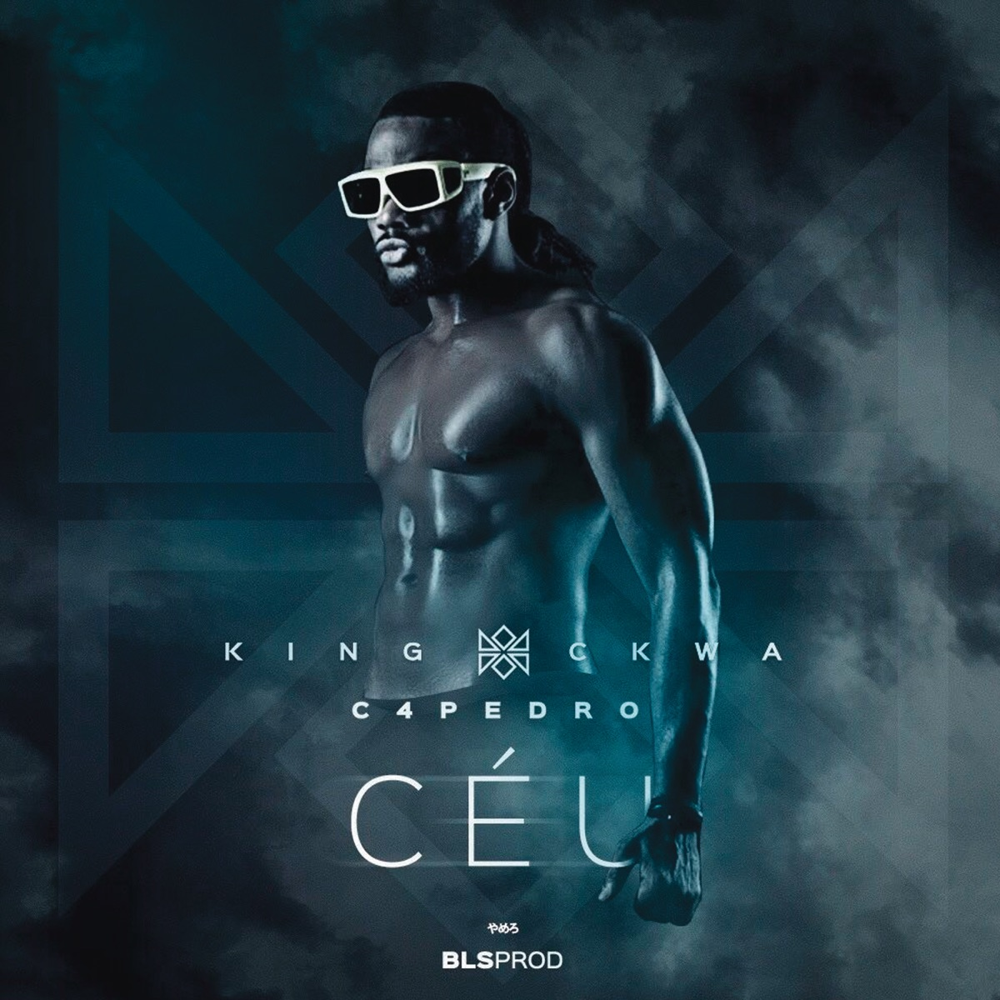

Nerú Americano - Mama é Baixinha
Vídeos em Destaque
1
Nerú Americano - Spider-Man (feat. Careca Vaidoso)
3:45
2

C4 Pedro - Céu
4:12
3
Yola Semedo - Volta Amor
3:58
Nerú Americano - Spider-Man
Feat. Careca Vaidoso
0:00
3:45
Playlist de Músicas
Nerú Americano - Spider-Man
Feat. Careca Vaidoso
C4 Pedro - Céu
Álbum: The Gentleman
Yola Semedo - Volta Amor
Álbum: Minha Essência
Rádios Africanas
Ouça as melhores estações de rádio da África
Radio Mais
99.1 FM · Angola
LIVE
Radio Escola
81.4 FM · Angola
LIVE
Radio Lac
89.9 FM · Angola
LIVE